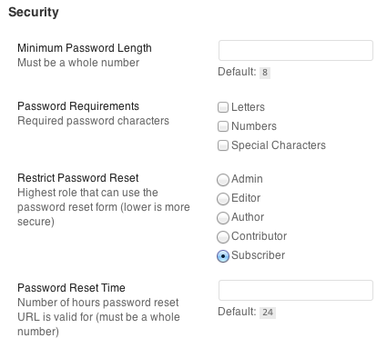
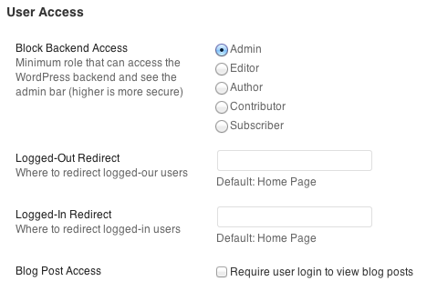

Don't want to mess around with settings? That's ok. WordPress for Web Apps includes a bunch of smart defaults so you don't have to.
But if you want more control, you've got it. The "Web App Options" page in the admin dashboard makes it easy to customize and control password requirements, button text and styling, alert messages and more.
Change the minimum password length, add character requirements, limit who can use the "forgot password" form, and change the number of hours a password reset email is valid.

Control who can access the backend (and see the admin bar), decide what page to redirect logged-in and logged-out users to, and restrict access to blog posts.

Assign a button class, change the text of buttons and labels, and pick a link for the forgot password page (this is the only setting that won't work if you don't give it a value).
Whether form fields are left blank or passwords don't match, there's an error message for most form issues. Change the defaults to suit your apps personality and style.
WordPress sends out a few default emails that aren't neccessarily a great user experience for you or your users. WordPress for Web Apps disables them by default, but you can reactivate them if you want to.